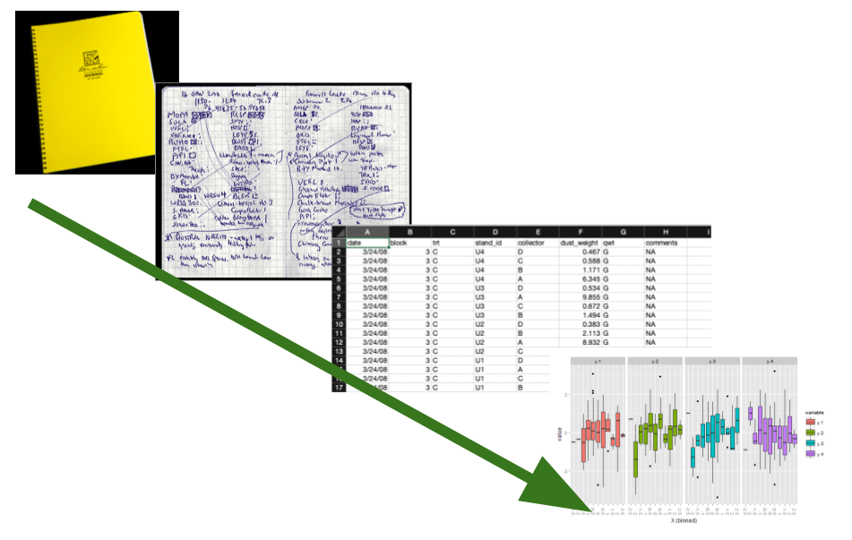
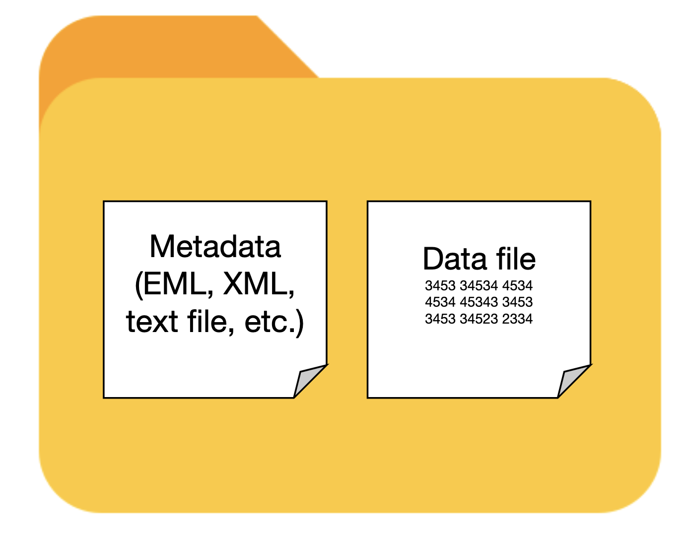

{kind=link}
{kind=link}
erDiagram
direction LR
plants }o--|| sampling_events : "sampled in"
plants {
int sampling_event_id FK
string site_name
int plot_num
int individual_num
float crown_wid_cm
float plant_ht_cm
}
sampling_events }|--|{ plots : samples
sampling_events {
int sampling_event_id PK
int site_id FK
dateTime sample_date
string observer
}
plots {
int plot_id PK
string site_name
int plot_num
float centroid_lat
float centroid_long
string treatment
}
Collecting and managing data
Overview
In this chapter we present important considerations and best practices for collecting quality Jornada data that can be used in the future. The guidance here varies depending on the data being collected — there are many kinds of research data — but some common themes apply. Try to use consistent, community-supported standards to collect, format, and clean your data, all while describing the process and data products with rich metadata. Following these recommendations will get your research data workflow off to a good start.

Collecting useful data
Research data are very diverse, but taking a thoughtful approach to collecting any data will make them more useful to you and others down the road. The data you collect and work with in the real world have several attributes to consider:
- Intended use: How the data will be used
- Content What the data are about, including the variables and observational units
- Source: Where the data come from and how they were acquired
- Data format: How data are represented in terms of structure, organization, and relationships
- File format: The physical format the data are stored in, such as a text file or JPEG image
Below, we provide data management recommendations organized around these attributes, with tabular data as our default example. Tabular data values fit into grid- or table-like structures with rows and columns representing observations and variables. This type of data, which includes delimited text files (like comma-separated value files, or CSVs), spreadsheets and similar, are the most common and recognizable data type in the environmental sciences. There are plenty of data that aren’t exactly tabular, so we also have sections devoted to unstructured data and other special cases.
NoteIntroducing metadata and datasets
The four attributes of data highlighted above are the beginning of metadata, or data that describe other data. Metadata provide important context about the data we work with and are essential for making that data understandable and usable (we’ll devote more time to this in the next chapter). Therefore, data and metadata should always travel together, and we have a special term for this pairing: a dataset. Datasets are fundamental units of information used in research, and important products of research activities, so we will refer to them often.

Intended use
The intended use, or how your data will be used, is something you should start envisioning early in the research process, probably around the same time you are considering hypotheses, experimental design, and analysis plans. Intended use of the data influences many of the decisions you’ll make during research, including data/metadata collection, formatting, quality assurance/control (QA/QC), and more. Its tough to give concrete advice here since most data can have many uses, but here are a few questions you should ask:
- What is the research purpose of the data?
- What statistical analyses will you perform?
- Who will use the data, and will they be used for more than research?
- Will you publish the data? Where and when?
Keep in mind that new uses for data frequently arise during research, so you will probably end up revisiting these questions.
TipRecommendations
- Think about intended uses for the data early - ideally before you collect it.
- Consider how the data will be used beyond your research project.
Content
The content of research data refers to what the data being collected are about. If you are the one doing the measuring or observing, you can describe the content of your data by specifying what variables are being collected and what observational units, such as study plots, organisms, quantities of matter, or events, you are collecting them from. At the Jornada we are usually studying biotic or abiotic phenomena in a slice of the Chihuahuan Desert, so the variables of interest are measured quantities or observations about organisms (e.g. body mass), environmental properties (e.g. temperature), or ecological processes (e.g. primary production), and the observational units are individuals (e.g. captured kangaroo rats), substrates (e.g. soil), or study areas (e.g. experimental plot). Variables can be classified into standard scales of measurement, such as the Stevens typology, and observational units usually require a brief description. Below are some considerations for several scientific variable types and observational units, including for unstructured data, according to how they are classified into scales of measurement:
Numeric variables, also called “quantitative” data, consist of number values organized into a measurement scale. The Stevens typology defines two types of numeric measurement scales: interval and ratio.
- Interval scale: numeric values with equal spacing and no meaningful zero point. Examples: degrees Celsius, dates
- Ratio scale: numeric values with equal spacing and a zero point. Examples: mass, length, counts, Kelvin
Additionally, numeric data can be discrete or continuous.
- Discrete data have values that are countable with whole numbers.
- Continuous data are best represented as real numbers, and are divisible into fractions or decimals.
What to remember about these data
- Numeric variables (interval and ratio) almost always have units, or at least a defined scale, and you should know what is appropriate for the data. The measurement units of quantities like mass (kg), temperature (°C), and time (s) should be recorded as you collect data. Even dimensionless variables usually have pseudo-units, such as a ratio (C:N), pH, number (count), or percentage, that needs to be documented with the data.
- Numeric data can be further described by the type, or number set, they are drawn from (integers, real, complex numbers), and by their precision (number of decimal places specified) and significant figures (the number of meaningful decimal places).
- Remember to document the observational units (subject of the measured/observed quantities) for each variable, i.e. the mass of the captured individuals, or the temperature of soil at 5 centimeter depth in plot #4.
Categorical variables, sometimes called “qualitative” data, consist of values that have defined levels used to classify or rank things. The Stevens typology defines two categorical scales of measurement: nominal and ordinal,
- Nominal scale: categorical values with levels that have no ordering, and are therefore equivalent to classifying things. Examples: species, treatments, sex
- Ordinal scale: categorical values with levels that rank or order things, but not necessarily with equal spacing between the levels. Examples: Likert scale (strongly agree, somewhat agree…), fire severity
Note that ordinal values have a numerical element to them (order or rank), so they don’t fit cleanly as qualitative data.
What to remember about these data
- In categorical variables, each level (corresponding to a group in the data) must have one unique value. For example, in a column denoting the sex of captured rodents, you wouldn’t assign some male individuals an “M” and some “male”.
- The levels defined by categorical variables are arbitrary (nominal) or semi-arbitrary (ordinal) until a meaning is assigned. Assigning standardized values that can be understood by your community (authoritative species codes, the Likert scale) makes data much more broadly useful and interpretable.
- Again, remember to document the observational unit (what the categorical labels apply to) for each variable, i.e. the species code of the captured individuals, or the responses to question n.
Boolean variables, or binary variables, are a subtype of nominal categorical data with only two levels. These levels can be represented as “yes or no”, “True or False”, 0 or 1, or other binary schemes.
What to remember about these data
- It seems simple, but it’s not. Make sure you and others clearly understand what the True/yes/1 and False/no/0 conditions mean.
Dates and times, sometimes referred to as datetime variables, describe when observations or other events happen. Datetime variables are very common in environmental science data since the timing of observations, measurements, and sampling events are usually necessary for analyzing and understanding the data. In addition, environmental data are typically collected repeatedly over time (i.e. they are time series or longitudinal data), and datetime variables provide the temporal information about these repeated observations. Dates and/or times can be specified many different ways. Datetime values can be provided as a specific instants with a calendar date and time, as a date only, as a time only, or as an interval between two times. The resolution, or smallest resolvable unit in a datetime variable, is also variable (year, day, millisecond). Finally, datetime variables can be referenced to different time zones, calendar systems (Gregorian, Julian, etc.), and epochs.
What to remember about these data
- Datetime variables can be described as having an interval scale of measurement when specific calendar dates (and times) are given, since the calendar has no meaningful zero point. Time durations are on the ratio scale of measurement since they may indicate events that happen at the same time (zero time elapsed).
- In time series and longitudinal data, the observations, measurements, and sampling events may occur at regular (equally spaced) or irregular (unequally spaced) intervals, and regular time series can be described with a frequency or sampling rate. There may also be gaps affecting otherwise regular time series that need to be considered.
- The observational unit in most cases is the time each observation or measurement occurred.
It is becoming become much more common for scientists to use large, unstructured datasets, including text, imagery, audio, and more, and it can be harder to describe the content of these with a clean classification system. Unstructured data is a catchall term for data that don’t fit neatly into a tabular format of rows and columns. This term is a misnomer since all data must have structure in order to convey information (i.e. completely random data are essentially meaningless). Unstructured data still contain loads of information, and it is usually possible to extract useful numeric or categorical variables like those described above if you know how and where to look.
- Text data, also known as character or alphanumeric data, are data consisting of a sequence of symbols drawn from a vocabulary or alphabet. Sometimes they are referred to as sequence/sequential data because the information content depends on the order of the symbols. Examples: Natural language data (from books, transcripts, etc.), nucleotide sequences
- Images, including ground-level photos or remotely-sensed images from satellites or aircraft, consist of gridded reflectance or spectral information about a particular scene or target area, as collected by an imaging sensor (like a camera). Sometimes other information, such as georeferencing or labeling, is attached to image data. Examples: high-resolution aerial imagery, camera trap images of animals
- Audio and video data are time series of sampled audio or image data. Examples: recorded bird songs, surveillance videos
- Document data can include many types of paper or electronic files generated by people for any number of purposes. Examples: books, journal articles, PDF documents, medical records
What to remember about these data
- This is a very diverse category of data types. Check the Special cases and unstructured data section for more information and ideas about what is important.
Remember to also pay attention to what is not in your data, e.g. what is excluded or missing, and any sources of bias. Detailed information about the content and limitations of your data will need to be in your metadata to provide context for a published dataset. Describing the content of data can be laborious, but scientific observations, even relatively large and complex ones like remote sensing images, can generally be described with standardized terms for variable types and observational units.
TipRecommendations
- Know what your data are about, including the variables observed or measured, and the observational units.
- Be prepared to describe what the data are about in your metadata.
- Be aware of any requirements for, and limitations of, the data you collect (e.g. human subjects, endangered species, sampling bias).
Source
The source of the data refers to where the data came from and how they were acquired. So, were the data collected in the field by a primary observer? By an autonomous sensor system? Or did they come from another researcher? In modern research it is common to integrate data from multiple sources, and it pays to document those sources well. If you collect the data yourself you should describe how you did so with rich metadata, which will make your data useful for the long term. If you use previously-collected datasets, you’ll need to find, acquire, analyze, and interpret the data and then cite them. You’ll have an easier time with that if the dataset creators were diligent about their metadata.
TipRecommendations
- Keep a detailed field or laboratory notebook to document your data collection activities.
- For autonomous data-collection systems (dataloggers, sensors, etc) keep extensive documentation, installation photos, and a log of changes and known issues.
- If you synthesize data from external sources or published studies, document the origin of all data you use.
Data format
There are at least two meanings wrapped up in the term data format. First, a data format describes the way data are structured, organized, and related.1 Tabular data formats, for example, resemble a grid where the columns and rows represent the variables and observations of the data, and there can be more than one way to arrange those. The second meaning of data format refers to the fact that the data values for any variable can be represented in more than one way. An identical date, for example, can be formatted as the text string “July 2, 1974” or as “1974-07-02.”
For tabular data, structuring the data you collect into the simplest possible table format is the best policy. First think about what variables you collect. Some will be categorical (treatment, plot number) and some are continuous (measured biomass, temperature). Then consider what an observation is. Is it a monthly measurement of a plant, or an hourly temperature value recorded by a sensor? Then, organize these values logically into clearly labeled columns and rows so that the data are understandable. If you’ve heard of “Tidy data”, this is a great mental model to use for organizing data in a table (Wickham 2014, more details below). In tidy tables, the columns are always variables and the rows represent observations (more details below). If you want to make sure the tabular data you collect follow fairly strict rules, consider using a relational database. Databases are not as simple as text files, but they do offer significant advantages for consistency and integrity of data.
When you format the actual data values within the table, use the most understandable and granular format you can. For example, if you have a nested experimental design with blocks, plots and individuals, separate the values for these variables into different columns and make sure they are consistent. For date and time values, we recommend using the ISO standard (YYYY-MM-DD) rather than the traditional month-day-year (mm/dd/yy) format. If you use a database, you can ensure standard formats are used by applying rules in the database (constraints).
In this example table you can see several data no-no’s.
- Several categorical variables have been joined into one in the “LOC” column.
- The variable names don’t give you a hint of what they are.
- The “DATE” column would be easy to misinterpret.
- There is no missing value indicator. For blank observations, was the individual missing or did the observer make a mistake?
In this example most of those issues have been corrected.
- The variable columns are distinct and have granular values with clear column labeles.
- The date column follows the ISO standard (YYYY-MM-DD).
- “NA” values are used for missing data, and there is a comment column indicating what they mean.
Relational databases are collections of data tables that follow specific rules and have relationships connecting them to each other. In each table, rows hold a specific kind of data record referring to entities like observations, study sites, or organisms, and columns hold the variables (or “attributes”) for the records. Records in different tables are related to each other via values in shared columns (“foreign keys”). The tables, columns, and relationships are defined in a database schema. Databases are a consistent and space-efficient way to store multidimensional data. Here’s a diagram of a relational database schema with three tables:2
The plants table holds records of measured plant dimensions and related variables, which are connected to a specific sampling event. The sampling_event table holds information about those events, including date, observer, and the plot sampled. The plots table is connected to sampling_event by the plot_id field and stores information about the name, location and treatment of the research plots.
TipRecommendations
- Use the simplest possible data structure.
- Organize data by observational unit during collection.
- Maximize the information for each observation.
File format
The file format of your data refers to the physical file type that your data are stored in on a disk or other storage medium. File formats usually have a specification (or set or rules), a name, and a file extension. Some examples would be a delimited text file (file extension .txt, or others), a Microsoft Excel file (file extension .xls or .xlsx), or a JPEG image (file extension .jpg or .jpeg). File formats usually depend on the data content or source, and are sometimes specific to particular data uses or software programs. Whenever possible, try to choose file formats that are (a) simple to use and understand, and (b) accessible and familiar to your community or collaborators. For tabular data we usually recommend delimited text files, like the trusty CSV, whenever possible, but there are other choices to consider, and pros and cons for each, below.
Delimited text files are a great format for using, archiving, and sharing your data. Rows of data values are stored as lines in a text file with a designated character serving as the delimiter between columns of data. They are human-readable, simple to understand, fairly space-efficient, and easy to use with almost any tool in your data workflow (R, Python, Excel, GIS software, etc.). They may have a .txt, .csv, .tsv, or other file extension depending on the source and the delimiter used.
{kind=link}
Microsoft Excel is a powerful spreadsheet program with a long history of use in research. Excel spreadsheets come in their own file format with the .xlsx extension (or .xls for old versions), but Excel can read and write quite a few other file formats, including delimited text files like CSV. Also note that Microsoft Excel is not the only spreadsheet game in town. Google Sheets and LibreOffice Calc are both full-featured and can interoperate with Excel file formats very well.
{kind=link}
Unfortunately, spreadsheets sometimes make the wrong assumption about the data you enter, and they are prone to being used in non-standardized ways. That makes spreadsheet files a little less friendly as an archive and distribution format for research data. See the example below.
{kind=link}
We discussed how relational databases structure data in the “Data format” section above. Databases are often used for very large data stores that are accessed by enterprise-level applications over a network, so they can be much more complicated than file-based data formats. But, there is a range to this complexity and there are some very friendly file-based databases that you can use easily on your local computer, share over email, or publish to a repository.
- SQLite is a single-file database.

- DuckDB is a single file columnar database optimized for big data analysis.

Keep in mind that you’ll probably need to learn some new skills to use the data in a database, particularly if they are large or have a complex schema (many linked tables). The Structured Query Language, or SQL, is the standard programming language for working with data in databases. Basic SQL is not too hard to learn, and it is useful for more than just database queries because it has been integrated into many data science tools like the R “tidyverse”, various Python libraries, and others.
Tools and resources
- DB Browser for SQLite is a good, cross-platform database browser for SQLite databases that is easy to use.
As we move towards creating and using high-volume research data, and employing cloud storage and computing services in research, there are some more advanced file formats to consider.
- Parquet files and other columnar formats
- Some databases
There are many other possible tabular data file formats. Some are good for quick, space-efficient storage, but not ideal for long-term preservation. Keep in mind that many of these formats are not easily human-readable without specialized software, so they may be difficult for novices to use. They may also be harder to describe with metadata, especially when publishing the dataset. Here are a few possible examples:
- R data binaries: R provides two file formats for storing data. RDS files (
.RDS) store a single R object, and RData files (.RDataor.rda) store multiple objects. - Python data binaries: There are many, including Numpy single and multi-array archives (
.npyand.npz), Pytables, pickle, and more - NetCDF and HDF5
- JSON and XML
- Apache Feather
TipRecommendations
- Use open, community-standard file formats instead of proprietary ones whenever possible.
- Try to use the simplest file format possible for your data.
- For tabular data, the delimited text file, or CSV, is a sensible default.
Special cases and unstructured data
Above, we’ve used tabular data as the default example, but like people, all data are special in their own way and they don’t always fit into a traditional tabular mold. Modern research techniques have opened up ways to use large, unstructured data sources3 for analysis, and at the same time can produce huge, multifaceted and distributed research datasets. Some examples include imagery from diverse sources, geospatial data, high-frequency sensor data, genomic data, social media data, models, document stores, and more. Many of these can still contain, or be converted to, tabular data forms, but because of their high volume and complexity it helps to extend our thinking beyond the tabular data paradigm. There is a detailed Data Package Design for Special Cases guide from LTER Network IMs and EDI with excellent guidance for some of these cases (Gries et al. 2021).
Images captured from cameras or similar imaging sensors. Individual images are usually represented as a rectangular grid of pixels with color, reflectance, or similar data values for each pixel, and there are often multiple bands (layers) in an image. Imagery data is very diverse and widely used in research.
| Intended use |
|
| Content |
|
| Source (or acquisition method) |
|
| Data format |
|
| File format |
|
There are a wide variety of environmental sensors in use for research and management applications. Air temperature sensors or soil water content sensors are common examples in use at the Jornada. Data from these sensors can be collected over a network, or downloaded directly from the sensor or the datalogger they are connected to, and there are many possible data and file formats depending on the sensor manufacturer, datalogger program, and more.
| Intended use |
|
| Content |
|
| Source (or acquisition method) |
|
| Data format |
|
| File format |
|
Geospatial data types are “georeferenced,” meaning some kind of location information is included with each observation.
| Intended use |
|
| Content |
|
| Source (or acquisition method) |
|
| Data format |
|
| File format |
|
Molecular data types contain information about DNA, RNA, proteins, or other biological polymers in organisms or the environment. They can contain, for example, the sequence of nucleotides in DNA extracted from organisms or environmental materials like soils. These data may be complete genomes or other “omes” (transcriptome, metabolome, etc.), meaning the full sequence of a particular molecule, gene, or organism, and sometimes only specific markers within longer sequences are identified and included in the data (genotyping or barcoding approaches). In most cases, extensive metadata annotations and information about field/laboratory procedures and bioinformatics pipelines are needed to make these data interpretable.
| Intended use |
|
| Content |
|
| Source (or acquisition method) |
|
| Data format |
|
| File format |
|
🚧
🚧
One last thought
As mentioned before, the data attributes discussed in the sections above are important to preserve as metadata, which are the pieces of contextual information that describe your research data. Collecting the raw observational or experimental data is never the end of the story. To proceed with any research project you will need metadata – about intended use, content, source, formatting, and much, much more – to provide context as you clean, analyze and interpret the data, and when the time comes to publish your research results. There are lots of concrete tips on how to collect useful metadata in the next chapter, but for now, please don’t forget to start writing down the details about how you collect your data!
TipRecommendations
- You need data AND METADATA to do useful research and get research results published.
- Make sure to plan for, collect, and preserve metadata early in your research.
Cleaning and other data processing
Once you have collected data, chances are you’ll need to process the data before analysis. This can include removing error values, calibrating variables, flagging outliers, standardizing categorical data, filling gaps, and much more, and it generally falls under the umbrella terms of data cleaning or quality assurance and control (QA/QC). Data cleaning is complicated and varied, and entire books have been written on the subject (W.Osborne 2013; Loo and Jonge 2018). We only provide some general guidance and further resources here. The Jornada IM team has a significant amount of experience and a variety of tools to draw on for cleaning and QA/QC of long-term Jornada datasets. For datasets contributed by individual researchers or groups, the Jornada IM team leaves most of this job up to them, but we are happy to advise when asked.
TipRecommendations
Here are some general best practices for data cleaning and QA/QC
- Always preserve the raw data in its original form. Chances are you’ll want to go back to the raw source data at least once.
- Use computer code or another scripted workflow, such as R or Python scripts,45 or OpenRefine6, to clean and QA/QC your raw data, not manual editing. See the guidance for doing this reproducibly in the Working with data chapter.
- If you can, use numerical or statistical rules to find and remove error values or outliers, not “judgment calls” or “eyeballing it.”
- Spread the job around! Data cleaning typically demands a huge fraction of the total time devoted to working with data (Wickham 2014) and it can be tedious work. Sharing the data-cleaning burden is more equitable, and it gets more eyes on the data which will improve data quality.
Data processing levels
Consider using the concept of data processing “levels,” meaning that defined sets of data cleaning and QA/QC operations are applied to the data consistently and in a stepwise fashion, and resulting data files are labeled distinctly and stored separately. Managing your data this way during the data collection phase sets your project on a path to being well-organized and reproducible later in the analysis phase (see the Working with data chapter). There are different ways to apply the concept of processing levels to your data.
At the simple end, you could use raw, ready, and results directories (folders) to store data as you process them. The raw folder is for any raw data you collect or download, and should be preserved unchanged. The ready folder is for data that have been cleaned, quality-assured, and/or harmonized (joined with other data) and are ready for analysis to answer research questions. The results folder is for any outputs of your analysis, such as summary data for figures or statistical results, that are derived from the ready data and directly underpin research results, such as those included in a journal article.
If your processing involves many steps or complicated data transformations you may want to create a processing system with a series of numbered data levels (level 0, level 1 …) and use associated labeled folders to store data files for each level (L0_data/, L1_data/…). As long as you document the meaning and processing operations for each level, this type of scheme is scalable and easy to understand. Numbered data levels work particularly well for continuous sensor data where instrument error removal, calibration, gapfilling, and other operations need to be managed over time. For example, incoming raw sensor data would be labeled “level 0” data and stored in one project directory, and “level 1” data files would be produced by running a data cleaning script to remove obvious instrumentation errors, and the stored in an appropriate “level 1” directory.
Resources
- Both the R and Python data science ecosystems have excellent documentation resources that thoroughly cover data cleaning. For R, consider starting with Hadley Wickham’s R for Data Science book chapter on data tidying (Wickham et al. 2023), and for Python check Wes McKinney’s Python for Data Analysis book chapter on data cleaning and preparation (McKinney 2022).
- For some general considerations on cleaning data, see EDI’s “Cleaning Data and Quality Control” resource.
Storage and backup
It is critically important to store your research data securely and have a reliable backup system for them. This means planning ahead so that you have enough storage space for multiple backup copies of your data, with a system that keeps backups in-sync with one another (preferably automatically) and allows restoration of data if disaster strikes. There is no one perfect backup system, and threats to data evolve fairly rapidly. Therefore, it pays to audit and test your backup system regularly to uncover failure points.
One common recommendation is to follow the 3-2-1 backup rule. In this system you keep 3 copies of your data on 2 different devices or storage media, with 1 copy of the data in an off-site location.7 There are multiple ways to accomplish this, but a simple example would be to have a copy of all your important data synced from a personal laptop computer to an external hard drive, and a separate copy synced to a cloud backup provider (Google, Dropbox, Backblaze, etc.). Be aware that automatic syncing between copies of your data can lead to permanent data loss (i.e. deleting a file locally will delete synced copies too), so having some versioning and rollback ability built into the system is also important.
There are a number of storage devices, software packages, and data services that can be used to build and maintain a solid backup system. Some of these may be available already at low- or no-cost through your institution or lab. Your friendly neighborhood data manager (jornada.data@nmsu.edu) can also offer advice and support for backup solutions if you ask.
TipRecommendations
- Plan ahead to be sure you have enough storage space for multiple copies of your data.
- Consider implementing a 3-2-1 backup system that includes three copies of important files, on at least two different devices/media, with one in an offsite location (such as with a cloud provider).
- Regularly check for flaws in your backup plan and don’t hesitate ask a data manager for help.
References
Gries, Corinna, Stace Beaulieu, Renee F Brown, et al. 2021. Data Package Design for Special Cases. Environmental Data Initiative. https://doi.org/10.6073/PASTA/9D4C803578C3FBCB45FC23F13124D052.
Loo, Mark van der, and Edwin de Jonge. 2018. Statistical Data Cleaning with Applications in R. John Wiley & Sons.
McKinney, Wes. 2022. Python for Data Analysis: Data Wrangling with Pandas, NumPy, and IPython. Third. O’Reilly Media. https://wesmckinney.com/book/.
Wickham, Hadley. 2014. “Tidy Data.” Journal of Statistical Software 59 (September): 1–23. https://doi.org/10.18637/jss.v059.i10.
Wickham, Hadley, Mine Cetinkaya-Rundel, and Garrett Grolemund. 2023. R for Data Science: Import, Tidy, Transform, Visualize, and Model Data. Second. O’Reilly Media. https://r4ds.hadley.nz/.
W.Osborne, Jason. 2013. Best Practices in Data Cleaning: A Complete Guide to Everything You Need to Do Before and After Collecting Your Data. SAGE Publications, Inc. https://doi.org/10.4135/9781452269948.
Footnotes
The concepts of data formats and data structuring can become fairly complicated and are related to the disciplines of database design and data modeling. For example, when designing a database one must decide what the entities (real-world concepts), tables (relations), attributes (columns), and foreign-key relationships (links between tables/columns) are. We won’t go into this much depth here, but it can sometimes be useful to have a detailed conceptual picture of how your research data fit together.↩︎
Again, “unstructured data” is a misnomer. Any data that contain usable information must, by definition, be structured. Truly unstructured data is just random noise. This term usually just refers to big, complicated, and sometimes messy datasets that haven’t been refined into well-described tables and databases that we are used to using in scientific research.↩︎
In R, the
tidyverselibraries (e.g.,dplyr,tidyr,stringr) are often used for data cleaning, as are additional libraries likejanitor.↩︎In Python,
pandasandnumpylibraries provide useful data cleaning features. There are also some stand-alone cleaning tools likepyjanitor(started as a re-implementation of the R version) andcleanlab(geared towards machine learning applications).↩︎OpenRefine is an open-source, cross-platform tool for iterative, scripted data cleaning.↩︎